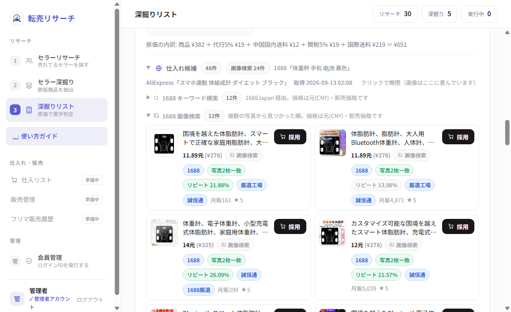

1688画像検索 — 改善前と改善後の違い
「仕入れ候補を探す」の画像検索について、何が変わったかを画面付きでご説明します。
1. いちばん分かりやすい変化
候補カードに緑色の 写真2枚一致 / 写真3枚一致 が出るようになりました。 これは「メルカリの写真を複数枚使って探したところ、何枚からも同じ商品に行き着いた」という意味です。 確度がいちばん高い候補なので、上のほうに出ます。

2. 改善前 → 改善後
| 項目 | 改善前 | 改善後（いま） |
|---|---|---|
| 並べ方 | 商品名の文字が近い順 → 見た目が近い商品が下に沈むことがあった | 複数の写真から見つかった順 → 見た目が近い候補が上に来る |
| 使う写真 | ほぼ1枚。1枚目は文字入れ・箱写真が多く、単独だと外れやすい | 同じ出品の写真を最大5枚使用。角度が違っても当たりやすい |
| 目印 | なし | 「写真N枚一致」バッジで確度が一目で分かる |
3. 他社ツールとの違い
| 他社ツール | 本システム | |
|---|---|---|
| 準備 | 1688アカウント ＋ Chrome拡張機能が必要 | 不要。ボタンを押すだけ |
| 動作場所 | ご自身のPCのChrome上 | サーバー側で完結 |
| スマホ | 拡張が使えず実質不可 | スマートフォンからも利用可 |
| 価格 | — | 1688の卸売価格を原価計算に直接取り込み。候補を見た瞬間に黒字判定できる |
参考実測（チェーンロック）：1688 は ¥69〜371、AliExpress は ¥171〜3,321。
卸売の1688のほうが桁ひとつ安くなることが多く、本システムは1688を優先して表示します。
4. お客様側で確認する手順
- ③ 深掘りリストで対象商品の「仕入れ候補を探す」を実行する
- 「仕入れ候補」を開き、「1688 画像検索」を開く
- 緑の「写真N枚一致」が付いた候補を優先して確認する
- 「採用」を押すと、単価と仕入先URLが原価計算に入ります
アプリ内の「使い方ガイド」→「画像検索の改善 — 何が変わったか」にも同じ内容を掲載しています。